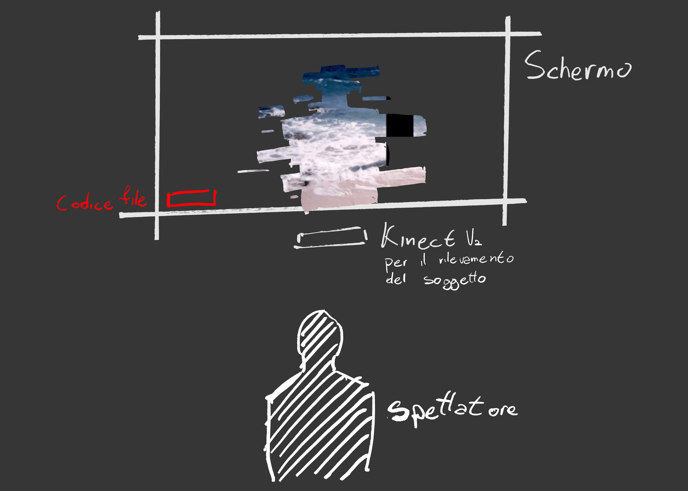
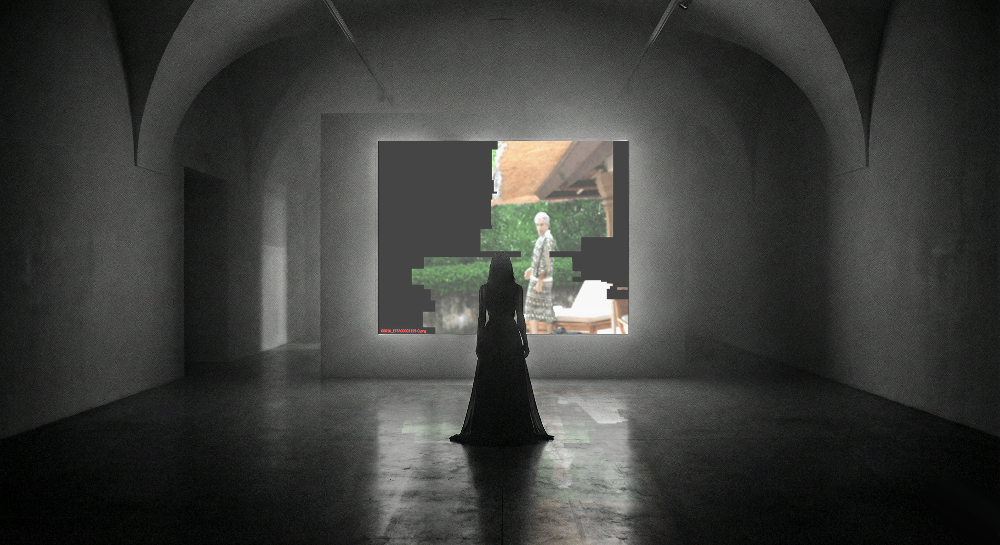
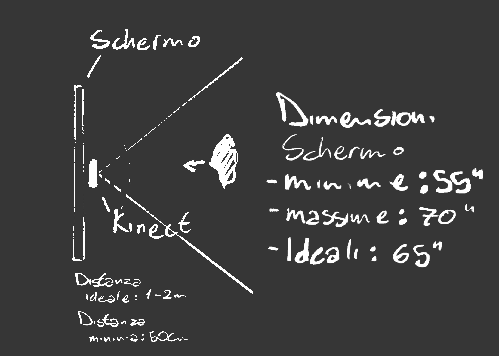
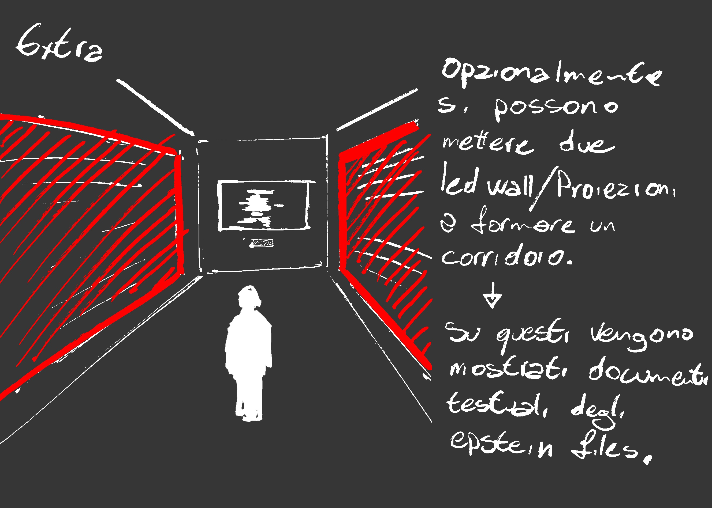

Concept
A seguito del rilascio dei documenti riguardanti il caso Epstein da parte del Dipartimento di Giustizia americano, il mondo intero è stato colto da un'onda di shock e incredulità. Questo progetto vuole mettere a fuoco la tematica dei documenti redatti in modo apparentemente casuale.
Mantenendo l'estetica ma ribaltando la dinamica della censura attuata dal Dipartimento di Giustizia americano, A Closer Look invita lo spettatore a svelare porzioni di immagini provenienti dagli Epstein files attraverso l'interazione sviluppata con una telecamera che riprende lo spettatore.
Struttura
Uno schermo mostra un'immagine nera. Non appena una persona si avvicina allo schermo, viene ripresa da una telecamera e la sua silhouette viene sovrapposta all'immagine nera, rivelado porzioni di una serie infinita di immagini provenienti dal database degli Epstein files che si alternano casualmente in rapida successione.
Per scelta estetica e per aggiungere un elemento di veridicità le immagini sono accompagnate da una didascalia che riporta il nome del file.
La parte visiva è accompagnata da una colonna sonora composta da estratti audio e testimonianze provenienti dal database degli Epstein files.
Tecnologia
Il progetto è sviluppato con Touchdesigner e utilizza un Kinect v2 per il rilevamento del movimento e la silhouette.



